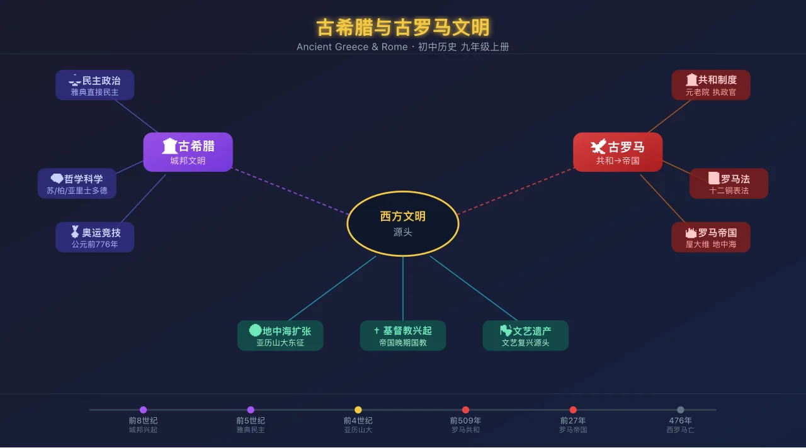
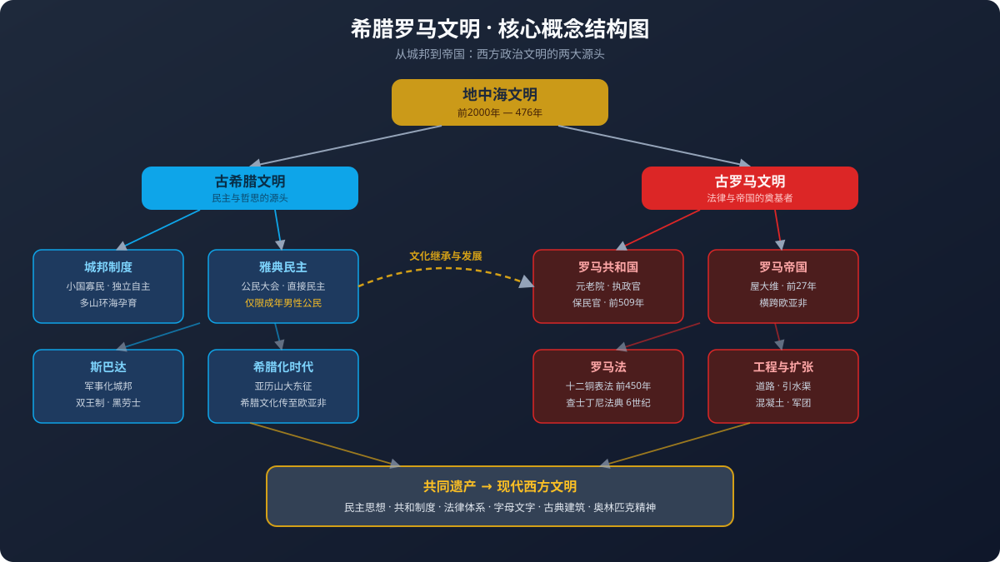
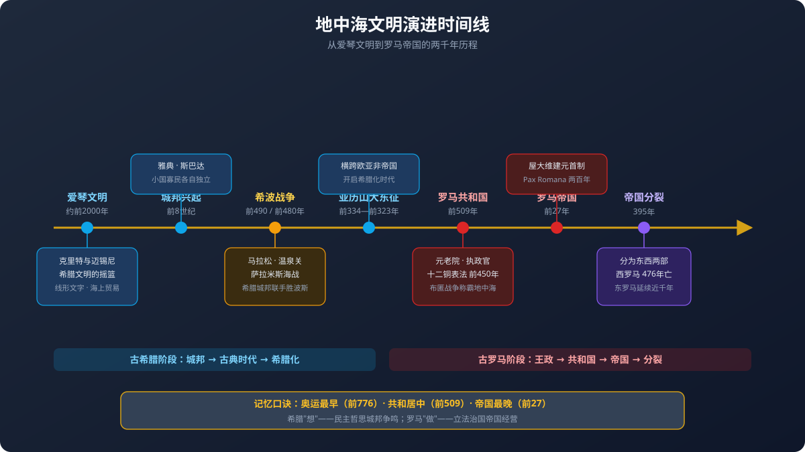

一张地中海地图，读懂民主与法治的两大源头

你听过奥运会，知道宙斯、阿波罗这些神话人物，也听说过"条条大路通罗马"。投票选班委、用法律保护自己、看电影里的角斗士——这些日常词汇背后，都站着两个两千年前的文明。
希腊和罗马傻傻分不清：民主是谁发明的？法律是谁奠定的？亚历山大和凯撒谁在前？两个文明到底谁影响了谁？为什么历史课本把它们放在同一课里讲？
用一张地中海探索地图 + 三大讲授模块，理清古希腊（民主与哲思的源头）和古罗马（法律与帝国的奠基者）两大文明，看清它们如何塑造了今天的世界。
我们将沿着地中海的海岸线旅行：先在爱琴海看希腊人如何在群山与大海之间建起上百个独立城邦，再到意大利半岛看罗马人如何从台伯河边的小城邦长成横跨三大洲的帝国，最后把两个文明放在同一张桌子上对比，找出它们留给现代世界的"文明基因"。途中你会操作地图、拖动时间轴、翻对比卡、做归类游戏——每一个互动都对应一个考点。
3 道小题，帮你定位起点。答错没关系，正文里都有答案。
古希腊雅典的民主政治，核心特征是什么？
罗马共和国时期，实际掌握最高权力的机构是？
古希腊第一届奥林匹克运动会举办于？
打开地图看希腊半岛，你会发现一个奇特的现象：这里没有像黄河、尼罗河那样的大河平原，而是群山把土地切割成无数小块，三面环海，岛屿星罗棋布。山地占了希腊本土约八成，平原狭小且分散，粮食产量有限。这样的地理条件带来三个深远后果。
第一，小国寡民。山岭阻隔交通，各个山谷、海岸边的居民点很难被统一成一个大国，于是形成了两百多个各自独立的城邦（polis）——每个城邦以一座城市为中心，连带周围乡村，有自己的政府、法律、军队和守护神。最著名的两个城邦是雅典和斯巴达，它们像两个极端：一个走向民主与文艺，一个走向军事与纪律。
第二，向海谋生。耕地不够种粮食，希腊人只好转向大海：用橄榄油、葡萄酒、陶器去交换黑海沿岸和埃及的粮食。航海贸易造就了发达的商业，也造就了见多识广、敢于冒险的公民阶层——这是雅典民主诞生的社会土壤。
第三，海外殖民。从公元前 8 世纪起，人口压力迫使希腊人乘船出海，在地中海和黑海沿岸建立了一百多个殖民城邦，南意大利和西西里甚至被称为"大希腊"。殖民把希腊文化撒向整个地中海，也为后来罗马与希腊的相遇埋下伏笔。
雅典民主不是一天建成的。公元前 594 年梭伦改革按财产划分公民等级，动摇了贵族特权；公元前 509 年克利斯提尼改革按地域划分选区，彻底打破氏族贵族的垄断；到公元前 5 世纪的伯里克利时代，雅典民主达到顶峰。它的运作靠三套机器。
公民大会是最高权力机关，全体成年男性公民都可以参加，在普尼克斯山丘上露天集会，就战争、法律、官员选举直接投票表决。一年开会约四十次，重要决议需要六千人以上的法定人数。五百人议事会是常设机构，由十个部落各抽签选出五十人组成，任期一年，负责为公民大会准备议案、处理日常政务——注意，是抽签而不是选举，雅典人认为抽签比选举更民主，因为选举会让有钱有势的人占便宜。陪审法庭由抽签产生的数千名陪审员组成，用投票的方式审判案件，没有职业法官。
雅典还有一项独特的制度叫陶片放逐法：每年公民大会投票，把被认为可能威胁民主的人写在陶片上，得票超过六千者被放逐十年——不没收财产，也不算犯罪，纯粹是"请你离开"。这制度防独裁，却也容易被政客操纵，后来被滥用而废除。
伯里克利还推行公职津贴：担任公职和陪审员发给补贴，让穷人也能参政。正是在这个时代，雅典成为"全希腊的学校"。
与雅典隔伯罗奔尼撒半岛相望的斯巴达，给出了治理城邦的另一种答案。斯巴达人征服了拉哥尼亚和美塞尼亚，把被征服者变成国有农奴黑劳士（helots）——黑劳士人数大约是斯巴达公民的十倍。为了镇压占人口绝大多数的黑劳士，斯巴达把整个国家变成了一座军营。
斯巴达的政治是二元制：有两个国王，平时分管宗教和司法，战时一人领兵一人留守，互相牵制；长老会议由二十八名六十岁以上的贵族加两位国王组成，掌握实权；公民大会只能对长老会议的提案喊"同意"或"反对"，不能讨论修改；还有五名监察官，权力极大，甚至可以审判国王。
斯巴达男孩七岁离开家庭，进入国家训练营阿戈格（agoge），接受严酷的军事教育：赤脚、单衣、挨饿、格斗，故意让他们去偷食物以锻炼机警——被抓住要挨鞭子，不是因为偷，而是因为笨。二十岁入伍，三十岁才成为全权公民，六十岁退役。斯巴达妇女也要接受体育训练，目的是生育强健的战士。这套制度造就了希腊最强的陆军，却也让斯巴达几乎没有留下哲学家、诗人和艺术家。
希波战争（前 492—前 449）是希腊城邦的生死之战。波斯帝国三次入侵：前 490 年，雅典人在马拉松平原以一万重装步兵击败波斯大军，一名士兵跑回雅典报捷后力竭而亡——这就是马拉松长跑的由来。前 480 年，波斯王薛西斯率大军压境，斯巴达国王列奥尼达率三百勇士扼守温泉关，全部战死，为希腊联军争取了时间；同年的萨拉米斯海战，雅典海军统帅地米斯托克利诱敌深入狭窄海峡，以少胜多摧毁波斯舰队。希腊的胜利保住了城邦的独立，也保住了刚刚诞生的民主实验。
但胜利之后，雅典把自愿结成的提洛同盟变成了称霸工具，向盟邦收取贡金、镇压叛离者，引起斯巴达为首的伯罗奔尼撒同盟警惕。伯罗奔尼撒战争（前 431—前 404）打了二十七年，雅典先因瘟疫失去伯里克利和三分之一人口，后远征西西里全军覆没，最终投降。这场"希腊内战"两败俱伤：雅典民主衰落，斯巴达也无力长期称霸，城邦时代走向终结——北方的马其顿乘机崛起。
马其顿位于希腊北部，被希腊人视为"半蛮族"。国王腓力二世学习希腊文化、改革军队，前 338 年击败希腊联军，成为希腊霸主。他遇刺后，二十岁的儿子亚历山大继位——注意，亚历山大是马其顿人，不是希腊人，但他师从亚里士多德，是希腊文化的狂热崇拜者。
前 334 年，亚历山大率三万五千人东征：格拉尼库斯河首战告捷，伊苏斯战役击败波斯王大流士三世，攻陷推罗，兵不血刃拿下埃及——埃及人把他当解放者欢迎，他在尼罗河口建起以自己命名的城市亚历山大里亚。前 331 年高加米拉决战灭波斯，随后一直打到印度河流域，因士兵厌战才班师。前 323 年，亚历山大在巴比伦病逝，年仅三十二岁。他用十三年建立了横跨欧亚非的大帝国，死后帝国被部将瓜分。
亚历山大真正的遗产不是疆土，而是文化：他在征服地建起七十多座"亚历山大里亚"城，移民希腊人，推广希腊语。此后三百年史称希腊化时代——希腊文化与埃及、波斯、印度文化交融，希腊语成为地中海东部的通用语。亚历山大里亚的图书馆和博物馆成为学术中心，欧几里得、阿基米德都在这里工作。希腊文明以这种方式，为后来罗马的征服做好了文化准备。
古希腊哲学是西方哲学的源头。苏格拉底从不在广场上讲课，而是拉住路人追问"什么是正义""什么是美德"，用连环提问让人发现自己无知的"问答法"探索真理，最终被雅典法庭以"腐蚀青年"罪名判处死刑，饮鸩而死——他的死成为思想自由与多数暴政关系的千古之问。学生柏拉图写下《理想国》，创办学园，主张由掌握哲学的王者治国；柏拉图的学生亚里士多德是百科全书式学者，研究逻辑学、物理学、生物学、政治学，留下名言"吾爱吾师，吾更爱真理"。师徒三代，奠定了西方理性传统。
科学方面：毕达哥拉斯证明了以他名字命名的定理（即勾股定理）；欧几里得的《几何原本》用公理化方法整理几何学，此后两千年都是标准教科书；阿基米德发现浮力定律和杠杆原理，喊出"给我一个支点，我能撬动地球"；希波克拉底被尊为"医学之父"，他提出的医学伦理誓言至今仍是医学生的入学誓词。
艺术建筑方面：希腊雕塑追求人体的理想比例，米隆的《掷铁饼者》定格了运动的瞬间。建筑形成多利安式（粗壮朴素）、爱奥尼亚式（优雅涡卷）、科林斯式（华丽叶饰）三种柱式。雅典卫城的帕特农神庙是多利安柱式的巅峰之作，供奉雅典娜女神，它的比例精确到肉眼难以察觉的弧度校正。前 776 年创办的奥林匹克运动会每四年在奥林匹亚举行一次，赛会期间各城邦必须停战——现代奥运会直接继承了这一传统。
同桌讨论 30 秒：雅典民主是真正的民主吗？如果雅典有 40 万人口，其中成年男性公民约 4 万人，那么"雅典民主"实际上覆盖了百分之几的人口？
A. 约 100%，人人平等 ｜ B. 约 50%，一半人参与 ｜ C. 约 10%，少数人的民主
雅典民主政治与现代民主的最大区别是？
罗马位于意大利半岛中部的台伯河畔。与希腊的破碎地形不同，意大利半岛有连贯的平原，波河平原肥沃，亚平宁山脉纵贯南北却不构成交通障碍——这种地理条件有利于形成统一国家。传说前 753 年，被母狼养大的双胞胎罗慕路斯与瑞摩斯建城，罗慕路斯杀死弟弟成为首任国王，罗马由此得名。
王政时代（前 753—前 509）先后有七位国王统治。末代国王"高傲者"塔克文暴虐，前 509 年贵族联合平民将其驱逐，从此罗马人立下誓言：永不要国王。共和国由此建立——"共和国"一词来自拉丁语 res publica，意思是"公共事务"。
共和国后期，连年内战：前三头同盟（克拉苏、庞培、凯撒）与后三头同盟（屋大维、安东尼、雷必达）轮番掌权。凯撒渡过卢比孔河、击败庞培，被任命为终身独裁官，前 44 年遇刺。其养子屋大维先与安东尼结盟，后在前 31 年亚克兴海战中击败安东尼与埃及艳后，前 27 年接受元老院奉上的"奥古斯都"（神圣尊贵者）称号，建立元首制——他自称"第一公民"，保留共和国的所有机构外壳，实际独揽军政大权。罗马进入帝国时代。
此后两百年是罗马和平（Pax Romana）时期：帝国版图在图拉真时代（117 年）达到极盛，西起不列颠，东至两河流域，北抵莱茵河—多瑙河，南括北非，地中海成了罗马的"内湖"，罗马人骄傲地称之为"我们的海"（Mare Nostrum）。
罗马共和国的制度设计充满制衡智慧。元老院由卸任高级官员组成，约三百人，终身任职，掌握财政、外交和军事决策的实际权力，是共和国的大脑。执政官两名，由公民大会选举，任期一年，拥有最高行政权和军事指挥权——设两名且任期仅一年，就是为了防止个人专权，任何决定须两人一致同意。公民大会选举官员、通过法律，但投票权按财产等级分配，富人占优势。
共和国早期，贵族垄断一切官职和法律解释权，平民（占人口多数的农民、手工业者、商人）不断抗争，甚至多次集体"撤离"罗马城以示抗议。斗争的成果：前 494 年起设立保民官，由平民选举产生，人身神圣不可侵犯，对任何损害平民利益的官员行为和元老院决议拥有否决权（veto）——拉丁语 veto 就是"我反对"的意思，今天联合国安理会的"一票否决"用的正是这个词。前 367 年，平民获得担任执政官的资格；前 287 年，平民大会决议无需元老院批准即对全体公民生效。
前 450 年颁布的《十二铜表法》是这场斗争最重要的成果。此前法律是不成文的习惯法，贵族法官随意解释；平民要求把法律写下来，刻在十二块铜牌上竖立在广场，人人可查。它的内容仍然保护私有制和贵族利益，但"成文"本身就是革命：法律从贵族的口中之物变成了公开的规则，贵族再也不能随意解释。它成为罗马法的起点，也是后世西方法律传统的基石。
罗马为什么能统治地中海世界六百年？靠三件硬实力。第一是军团：罗马军团约五千人，编为十个大队，装备标枪、短剑和盾牌，训练严格、纪律残酷——临阵脱逃的部队会执行"十一抽杀律"。军团不仅是战斗队，还是工程队，行军到哪里，堡垒和道路就修到哪里。
第二是道路网：罗马人修建了总长约八万公里的干道，"条条大路通罗马"不是比喻而是事实。最著名的是前 312 年修建的亚壁古道，从罗马通往南意大利，路面用巨石铺砌，部分路段至今仍在使用。道路让军团二十天内可以从罗马抵达帝国任何边境，也让商队和政令畅通无阻。
第三是混凝土与拱券：罗马人发明了火山灰混凝土，配合拱券结构，造出希腊人无法想象的巨型建筑。万神庙的穹顶直径 43 米，保持世界纪录一千七百年；罗马斗兽场可容纳五万观众，有八十座拱门；遍布帝国的引水渠把山泉引入城市，法国南部的加尔桥高三层近五十米，全靠石块干砌。罗马的城市有自来水、下水道、公共浴场和集中供暖——这些设施欧洲要到一千多年后才重新普及。
如果说希腊留给世界的是"如何思考"，罗马留给世界的就是"如何治理"。罗马法的发展跨越千年：《十二铜表法》（前 450）是起点，只适用于罗马公民，称公民法；随着帝国扩张，罗马人与外邦人的纠纷增多，逐渐形成适用于帝国境内一切自由民的万民法；法学家们还提炼出"自然法"理念——法律之上还有人人平等的理性正义。
罗马法确立了许多沿用至今的原则：法律面前（自由民）人人平等、契约自由、私有财产神圣不可侵犯、无罪推定、重视证据和程序。6 世纪，东罗马皇帝查士丁尼组织法学家把历代法律、法令和法学著作汇编成《查士丁尼法典》《学说汇纂》《法学阶梯》等，合称《罗马民法大全》。它成为后世大陆法系的源头：法国《拿破仑法典》、德国民法典都以它为蓝本，现代中国、日本的法律体系也属于这一传统。英国法学家梅因说，罗马法三次征服世界：第一次靠武力，第二次靠宗教，第三次靠法律——而法律的征服最持久。
1 世纪，基督教诞生于罗马帝国统治下的巴勒斯坦地区。它宣扬上帝面前人人平等、爱人如己，最初在穷人、奴隶中传播，遭到帝国迫害——尼禄皇帝曾把基督徒当作罗马大火的替罪羊。但压迫没能阻止传播：313 年君士坦丁颁布米兰敕令承认基督教合法，392 年狄奥多西将其定为国教。一个诞生于帝国边陲的小教派，最终成为帝国的官方信仰，并随帝国的遗产传遍欧洲。
帝国的衰落是多因叠加的慢性病：经济上，奴隶制庄园效率低下，扩张停止后奴隶来源枯竭；政治上，3 世纪五十年间换了二十六个皇帝，多数死于兵变；军事上，军费膨胀压垮财政，军队越来越依赖雇佣的日耳曼"蛮族"士兵；社会上，苛捐杂税使自耕农破产，城市萎缩。330 年君士坦丁迁都拜占庭，改名君士坦丁堡，帝国重心东移。395 年帝国正式分裂为东西两部。在日耳曼部族迁徙的浪潮中，410 年罗马城首次被攻陷，455 年再遭洗劫，476 年日耳曼将领废黜末代皇帝罗慕路斯·奥古斯都——西罗马帝国灭亡，西欧进入中世纪。东罗马（拜占庭）帝国则以君士坦丁堡为中心又延续了近千年，直到 1453 年。
拖动滑块，查看罗马从建城到灭亡的八个关键时刻。
《十二铜表法》的历史意义在于？
本课的主角。拖动、缩放地图，切换图层，点击十个探索点，完成下方三个探索任务。
操作提示：拖动平移、滚轮缩放；点击彩色圆点查看地点讲解；用「细节图层」按钮切换希腊范围与罗马疆域两个图层；顶部按钮切换两个时代。
| 维度 | 🏛️ 古希腊（雅典为代表） | 🦅 古罗马（共和国与帝国） |
|---|---|---|
| 政治形态 | 城邦林立，雅典实行直接民主 公民大会直接投票决策；抽签选官；陶片放逐法防独裁 |
从共和制到元首制帝国 元老院+执政官+保民官相互制衡；帝国时期皇帝独揽大权 |
| 文化性格 | 重思辨、求美与真理 哲学三贤、几何学、悲剧喜剧、理想化雕塑 |
重实用、求秩序与效率 法学、史学、工程学、写实肖像；文化上大量吸收希腊成果 |
| 法律贡献 | 民主程序与公民观念 陪审法庭投票审判；公民权利义务观念 |
系统的成文法律体系 十二铜表法→公民法→万民法→查士丁尼法典 |
| 工程建设 | 神庙与柱式建筑美学 帕特农神庙；多利安/爱奥尼亚/科林斯三柱式 |
改变世界的实用工程 混凝土、拱券、道路网、引水渠、斗兽场、万神庙穹顶 |
| 地理格局 | 巴尔干半岛+爱琴海岛屿+海外殖民地 分散城邦，从未统一为大国 |
从意大利扩张至地中海全域 统一大帝国，地中海成为内湖 |
| 共同局限 | 都建立在奴隶制基础上；政治权利都排除了妇女和外邦人；希腊民主仅限成年男性公民，罗马共和国的实权也长期掌握在贵族元老手中 | |
💡 记忆口诀：希腊"想"——民主哲思，城邦争鸣；罗马"做"——立法治国，帝国经营。希腊出思想，罗马出制度。
点击卡片翻面查看答案
对比点：政治制度全体成年男性公民参加，直接投票决定战争、法律与官员选举。配套机构：五百人议事会（抽签产生，准备议案）、陪审法庭（抽签产生，投票审判）。
点击卡片翻面查看答案
对比点：政治制度由卸任高级官员组成，掌财政外交军事实权。执政官两人任期一年相互牵制；保民官代表平民，拥有否决权（veto）。
点击卡片翻面查看答案
对比点：文化影响民主政治实验、哲学思辨、科学精神、奥运传统、戏剧与雕塑艺术。文艺复兴就是"重新发现"古希腊罗马文化。
点击卡片翻面查看答案
对比点：文化影响罗马法是大陆法系源头；元老院（Senate）之名沿用至今；拉丁字母成为欧洲通用文字；混凝土与拱券技术影响建筑两千年。
把下方词条拖到正确的文明区域，全部放对后点击"检查成绩"。
雅典直接民主证明了"普通人可以治理国家"这一理念的可行性，启发了近代代议制民主——美国《独立宣言》和法国《人权宣言》的思想都能追溯到古希腊。罗马共和制的权力制衡直接影响了美国三权分立的设计：美国参议院英文 Senate 就来自拉丁文 Senatus（元老院），国会大厦的建筑样式也模仿罗马神庙。
罗马法是当今大多数欧洲国家法律的基础。《查士丁尼法典》（6 世纪）系统整理罗马法，影响了法国、德国、日本、中国等大陆法系国家，其"无罪推定""契约精神""私有财产保护"等原则至今仍是现代法律的核心。我们今天说"法人""合同""继承"，用的都是罗马法开创的概念。
古希腊雕塑与帕特农神庙柱式成为文艺复兴和新古典主义的模板——北京的人民大会堂、华盛顿的林肯纪念堂都用希腊柱式。古罗马竞技场、凯旋门、万神庙代表古代工程顶峰。14—17 世纪文艺复兴的核心，就是重新发现和弘扬古希腊罗马的文化遗产。现代奥运会则直接起源于古希腊的奥林匹克运动会，马拉松长跑纪念的是希波战争中的报捷士兵。
希腊字母源自腓尼基字母，又衍生出拉丁字母和西里尔字母——今天英语、法语、俄语使用的字母系统都能追溯到希腊。基督教在罗马帝国境内诞生并传播，392 年成为国教后随罗马扩张传遍欧洲。东罗马帝国（拜占庭）延续千年，保存了古希腊罗马文献并传播到中世纪欧洲乃至阿拉伯世界，为文艺复兴保存了火种。
4 道题检验学习效果，答完生成结课报告。
以下关于雅典民主政治的表述，正确的是？
罗马帝国的建立者是？
古希腊和古罗马文明的共同之处是？
罗马共和国时期，"保民官"的主要职能是？
三个年份别记混：前 776 年 = 首届奥运会（希腊）；前 509 年 = 罗马共和国建立；前 27 年 = 罗马帝国建立。考试常把这三个年份放在同一道题里张冠李戴——记住"奥运最早，共和居中，帝国最晚"。另外记住三个"不是"：希腊不是统一国家、共和国不是帝国、亚历山大不是希腊人。

